第五章 Linux内核体系结构¶
-
本章首先概要介绍了Linux内核的编制模式和体系结构，然后详细描述了Linux内核源代码目录中组织形式以及子目录中各个代码文件的主要功能以及基本调用的层次关系。接下来就直接切入正题，从内核源文件Linux/目录下的第一个文件Makefile开始，对每一行代码进行详细注释说明。
-
本章内容可以看作是对内核源代码的总结概述，也可以作为阅读后续章节的参考信息。对于较难理解的地方可以先跳过，待阅读到后面相关内容时再返回来参考本章内容。在阅读本章之前请先复习或学习有关80X86保护模式运行方式工作原理。
-
一个完整可用的操作系统主要由4部分组成：硬件、操作系统内核、操作系统服务和用户应用程序, 见图5-1所示。
-
用户应用程序是指那些字处理程序、Internet浏览器程序或用户自行编制的各种应用程序;
-
操作系统服务程序是指那些向用户提供的服务被看作是操作系统部分功能的程序。在Linux操作系统上, 这些程序包括X窗口系统、shell命令解释系统以及那些内核编程接口等系统程序；
-
操作系统内核程序即是本书所感兴趣的部分，它主要用于对硬件资源的抽象和访问调度。
-
Linux 内核的主要用途就是为了与计算机硬件进行交互，实现对硬件部件的编程控制和接口操作, 调度对硬件资源的访问，并为计算机上的用户程序提供一个高级的执行环境和对硬件的虚拟接口。
5.1 Linux内核模式¶
-
目前，操作系统内核的结构模式主要可分为整体式的单内核模式和层次式的微内核模式。而本书所注释的Linux0.11内核，则是采用了单内核模式。单内核模式的主要优点是内核代码结构紧凑、执行速度快，不足之处主要是层次结构性不强。
-
在单内核模式的系统中，操作系统所提供服务的流程为：应用主程序使用指定的参数值执行系统调用指令(int x80)，使CPU从用户态（User Mode）切换到核心态（Kernel Model），然后操作系统根据具体的参数值调用特定的系统调用服务程序，而这些服务程序则根据需要再调用底层的一些支持函数以完成特定的功能。在完成了应用程序所要求的服务后，操作系统又使CPU从核心态切换回用户态，从而返回到应用程序中继续执行后面的指令。因此概要地讲，单内核模式的内核也可粗略地分为三个层次：调用服务的主程序层、执行系统调用的服务层和支持系统调用的底层函数。见图5-2所示。
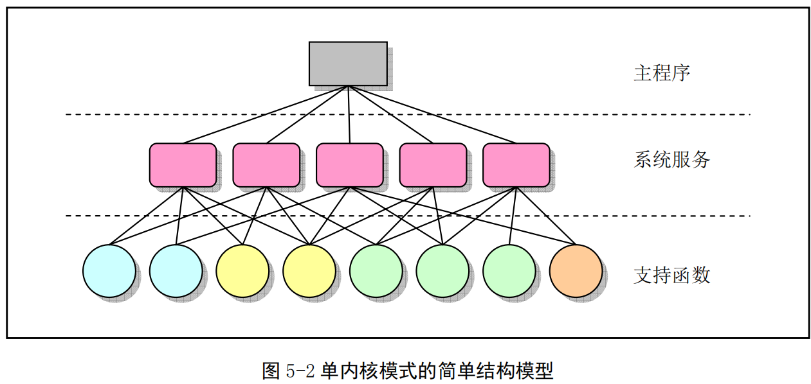
5.2 Linux内核系统体系结构¶
Linux 内核主要由 5个模块构成，它们分别是：
- 进程调度模块
- 内存管理模块
- 文件系统模块
- 进程间通信模块
-
网络接口模块
-
进程调度模块用来负责控制进程对CPU资源的使用。所采取的调度策略是各进程能够公平合理地访问CPU，同时保证内核能及时地执行硬件操作。内存管理模块用于确保所有进程能够安全地共享机器主内存区，同时，内存管理模块还支持虚拟内存管理方式，使得Linux支持进程使用比实际内存空间更多的内存容量。并可以利用文件系统把暂时不用的内存数据块交换到外部存储设备上去，当需要时再交换回来。文件系统模块用于支持对外部设备的驱动和存储。虚拟文件系统模块通过向所有的外部存储设备提供一个通用的文件接口，隐藏了各种硬件设备的不同细节。从而提供并支持与其他操作系统兼容的多种文件系统格式。进程间通信模块子系统用于支持多种进程间的信息交换方式。网络接口模块提供对多种网络通信标准的访问并支持许多网络硬件。
-
这几个模块之间的依赖关系见图 5-3所示。其中的连线代表它们之间的依赖关系，虚线和虚框部分 表示Linux0.11中还未实现的部分（从Linux0.95版才开始逐步实现虚拟文件系统，而网络接口的支持到0.96版才有）。
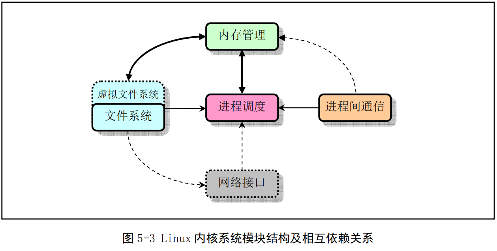
-
由图可以看出，所有的模块都与进程调度模块存在依赖关系。因为它们都需要依靠进程调度程序来挂起（暂停）或重新运行它们的进程。
-
其他几个模块的依赖关系有些不太明显，但同样也很重要。进程调度子系统需要使用内存管理来调 整一特定进程所使用的物理内存空间。进程间通信子系统则需要依靠内存管理器来支持共享内存通信机制。这种通信机制允许两个进程访问内存的同一个区域以进行进程间信息的交换。虚拟文件系统也会使用网络接口来支持网络文件系统（NFS），同样也能使用内存管理子系统提供内存虚拟盘（ramdisk）设备。而内存管理子系统也会使用文件系统来支持内存数据块的交换操作。
- 若从单内核模式结构模型出发，我们还可以根据Linux0.11内核源代码的结构将内核主要模块绘制成图5-4 所示的框图结构。
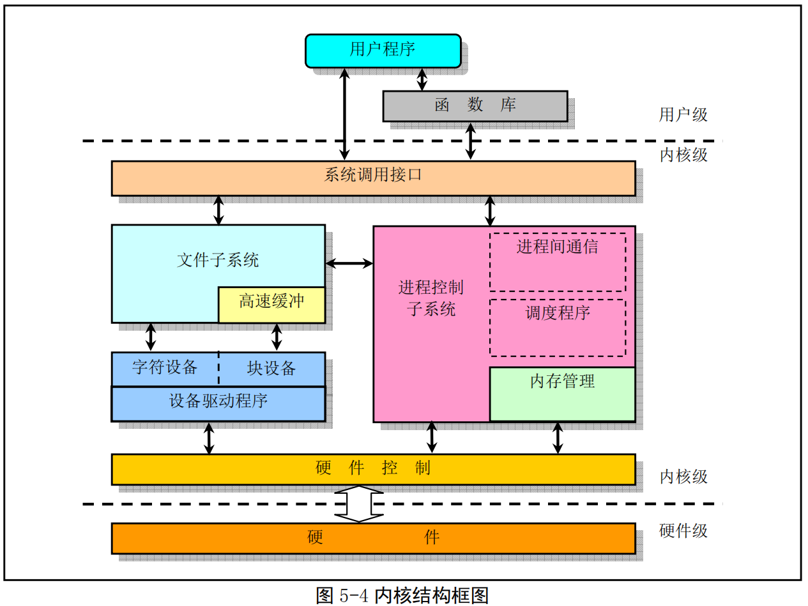
- 其中内核级中的几个方框，除了硬件控制方框以外，其他粗线方框分别对应内核源代码的目录组织结构。
5.3 Linux内核对内存的管理和使用¶
5.3.1 物理内存¶
在Linux 0.11 内核中，为了有效地使用机器中的物理内存，在系统初始化阶段内存被划分成几个功能区域，见图5-5所示。
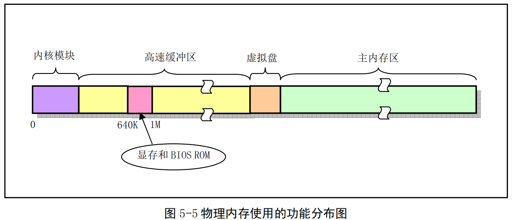
-
其中，Linux 内核程序占据在物理内存的开始部分，接下来是供硬盘或软盘等块设备使用的高速缓冲区部分（其中要扣除显示卡内存和ROM BIOS所占用的内存地址范围640K--1MB）。当一个进程需要读取块设备中的数据时，系统会首先把数据读到高速缓冲区中；当有数据需要写到块设备上去时，系统也是先将数据放到高速缓冲区中，然后由块设备驱动程序写到相应的设备上。内存的最后部分是供所有程序可以随时申请和使用的主内存区。内核程序在使用主内存区时，也同样首先要向内核内存管理模块提出申请，并在申请成功后方能使用。对于含有RAM虚拟盘的系统，主内存区头部还要划去一部分，供虚拟盘存放数据。
-
由于计算机系统中所含的实际物理内存容量有限,因此CPU中通常都提供了内存管理机制对系统中的内存进行有效的管理。在Intel 80386及以后的CPU中提供了两种内存管理（地址变换）系统：内存分段系统（Segmentation System）和分页系统（Paging System）。其中分页管理系统是可选择的，由系统程序员通过编程来确定是否采用。为了能有效地使用物理内存，Linux 系统同时采用了内存分段和分页管理机制。
5.3.2 内存地址空间概念¶
-
Linux 0.11内核中，在进行地址映射操作时，我们需要首先分清3种地址以及它们之间的变换概念：
-
a．程序（进程）的虚拟和逻辑地址；b.CPU的线性地址；c．实际物理内存地址。
-
虚拟地址（VirtualAddress）是指由程序产生的由段选择符和段内偏移地址两个部分组成的地址。因为这两部分组成的地址并没有直接用来访问物理内存，而是需要通过分段地址变换机制处理或映射后才对应到物理内存地址上，因此这种地址被称为虚拟地址。虚拟地址空间由GDT映射的全局地址空间和由LDT映射的局部地址空间组成。选择符的索引部分由13个比特位表示，加上区分GDT和LDT的1 个比特位，因此Intel80X86CPU共可以索引16384个选择符。若每个段的长度都取最大值 4G，则最大虚拟地址空间范围是16384*4G=64T。
-
逻辑地址（Logical Address）是指由程序产生的与段相关的偏移地址部分。在Intel保护模式下即是指程序执行代码段限长内的偏移地址（假定代码段、数据段完全一样）。应用程序员仅需与逻辑地址打交道，而分段和分页机制对他来说是完全透明的，仅由系统编程人员涉及。不过有些资料并不区分逻辑地址和虚拟地址的概念，而是将它们统称为逻辑地址。
-
线性地址（LinearAddress）是虚拟地址到物理地址变换之间的中间层，是处理器可寻址的内存空间（称为线性地址空间）中的地址。程序代码会产生逻辑地址，或者说是段中的偏移地址，加上相应段的基地址就生成了一个线性地址。如果启用了分页机制，那么线性地址可以再经变换以产生一个物理地址。若没有启用分页机制，那么线性地址直接就是物理地址。Intel 80386 的线性地址空间容量为4G。
-
物理地址（Physical Address）是指出现在 CPU外部地址总线上的寻址物理内存的地址信号，是地址变换的最终结果地址。如果启用了分页机制，那么线性地址会使用页目录和页表中的项变换成物理地址。如果没有启用分页机制，那么线性地址就直接成为物理地址了。
-
虚拟存储（或虚拟内存）（Virtual Memory）是指计算机呈现出要比实际拥有的内存大得多的内存量。因此它允许程序员编制并运行比实际系统拥有的内存大得多的程序。这使得许多大型项目也能够在具有有限内存资源的系统上实现。一个很恰当的比喻是：你不需要很长的轨道就可以让一列火车从上海开到北京。你只需要足够长的铁轨（比如说3公里）就可以完成这个任务。采取的方法是把后面的铁轨立刻铺到火车的前面，只要你的操作足够快并能满足要求，列车就能象在一条完整的轨道上运行。这也就是虚拟内存管理需要完成的任务。在Linux 0.11内核中，给每个程序（进程）都划分了总容量为64MB 的虚拟内存空间。因此程序的逻辑地址范围是0x0000000到0x4000000。（0x4000000 = 64MB）
如上所述，有时我们也把逻辑地址称为虚拟地址。因为逻辑地址与虚拟内存空间的概念类似，并且也是与实际物理内存容量无关。
5.3.3 内存分段机制¶
- 在内存分段系统中，一个程序的逻辑地址通过分段机制自动地映射（变换）到中间层的 4GB（2^32） 线性地址空间中。程序每次对内存的引用都是对内存段中内存的引用。当程序引用一个内存地址时，通过把相应的段基址加到程序员看得见的逻辑地址上就形成了一个对应的线性地址。此时若没有启用分页机制，则该线性地址就被送到CPU的外部地址总线上，用于直接寻址对应的物理内存。见图5-6所示。
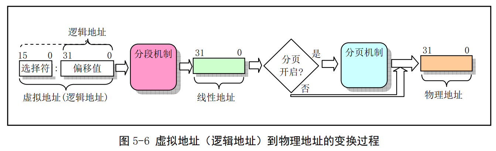
-
CPU进行地址变换（映射）的主要目的是为了解决虚拟内存空间到物理内存空间的映射问题。虚拟内存空间的含义是指一种利用二级或外部存储空间，使程序能不受实际物理内存量限制而使用内存的一种方法。通常虚拟内存空间要比实际物理内存量大得多。
-
那么虚拟存储管理是怎样实现的呢？原理与上述列车运行的比喻类似。首先，当一个程序需要使用一块不存在的内存时（也即在内存页表项中已标出相应内存页面不在内存中），CPU就需要一种方法来得知这个情况。这是通过80386的页错误异常中断来实现的。当一个进程引用一个不存在页面中的内存地址时，就会触发CPU产生页出错异常中断，并把引起中断的线性地址放到CR2 控制寄存器中。因此处理该中断的过程就可以知道发生页异常的确切地址，从而可以把进程要求的页面从二级存储空间（比如硬盘上）加载到物理内存中。如果此时物理内存已经被全部占用，那么可以借助二级存储空间的一部分作为交换缓冲区（Swapper）把内存中暂时不使用的页面交换到二级缓冲区中，然后把要求的页面调入内存中。这也就是内存管理的缺页加载机制，在Linux 0.11内核中是在程序 mm/memory.c 中实现。
-
Intel CPU使用段（Segment）的概念来对程序进行寻址。每个段定义了内存中的某个区域以及访问的优先级等信息。假定大家知晓实模式下内存寻址原理，现在我们根据CPU在实模式和保护模式下寻址方式的不同，用比较的方法来简单说明32位保护模式运行机制下内存寻址的主要特点。
-
在实模式下，寻址一个内存地址主要是使用段和偏移值，段值被存放在段寄存器中（例如 ds），并且段的长度被固定为64KB。段内偏移地址存放在任意一个可用于寻址的寄存器中（例如 si）。因此，根据段寄存器和偏移寄存器中的值，就可以算出实际指向的内存地址，见图 5-7(a)所示。
-
而在保护模式运行方式下，段寄存器中存放的不再是被寻址段的基地址，而是一个段描述符表（Segment Descriptor Table）中某一描述符项在表中的索引值。索引值指定的段描述符项中含有需要寻址的内存段的基地址、段的长度值和段的访问特权级别等信息。寻址的内存位置是由该段描述符项中指定的段基地址值与一个段内偏移值组合而成。段的长度可变，由描述符中的内容指定。可见，和实模式下的寻址相比，段寄存器值换成了段描述符表中相应段描述符的索引值以及段表选择位和特权级，称为段选择符（Segment Selector），但偏移值还是使用了原实模式下的概念。这样，在保护模式下寻址一个内存地址就需要比实模式下多一道手续，也即需要使用段描述符表。这是由于在保护模式下访问一个内存段需要的信息比较多，而一个16位的段寄存器放不下这么多内容。示意图见图5-7(b)所示。注意，如果你不在一个段描述符中定义一个内存线性地址空间区域，那么该地址区域就完全不能被寻址，CPU将拒绝访问该地址区域。
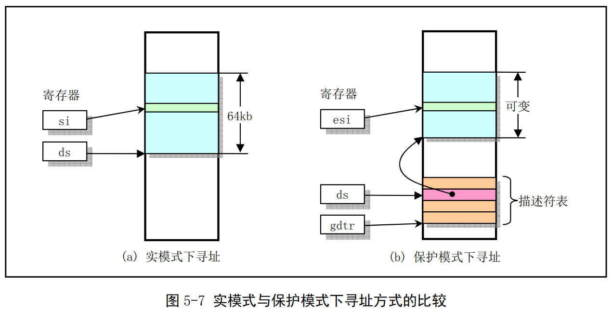
-
每个描述符占用8个字节，其中含有所描述段在线性地址空间中的起始地址（基址）、段的长度、段的类型（例如代码段和数据段）、段的特权级别和其他一些信息。一个段可以定义的最大长度是4GB。
-
保存描述符项的描述符表有3种类型，每种用于不同目的。全局描述符表 GDT（Global Descriptor Table）是主要的基本描述符表,该表可被所有程序用于引用访问一个内存段。中断描述符表 IDT（Interrupt Descriptor Table）保存有定义中断或异常处理过程的段描述符。IDT 表直接替代了8086 系统中的中断向量表。为了能在 80X86 保护模式下正常运行，我们必须为CPU定义一个GDT表和一个IDT表。最后一种类型的表是局部描述符表LDT（Local Descriptor Table）。该表应用于多任务系统中，通常每个任务使用一个LDT表。作为对GDT表的扩充，每个LDT表为对应任务提供了更多的可用描述符项，因而也为每个任务提供了可寻址内存空间的范围。这些表可以保存在线性地址空间的任何地方。
-
为了让CPU能定位 GDT表、IDT表和当前的LDT表，需要为CPU分别设置GDTR、IDTR和LDTR三个特殊寄存器。这些寄存器中将存储对应表的 32位线性基地址和表的限长字节值。表限长值是表的长度值-1。
-
当CPU要寻址一个段时,就会使用16位的段寄存器中的选择符来定位一个段描述符。在 80X86CPU 中，段寄存器中的值右移3位即是描述符表中一个描述符的索引值。13位的索引值最多可定位8192（0--8191）个的描述符项。选择符中位2（TI）用来指定使用哪个表。若该位是0则选择符指定的是GDT 表中的描述符，否则是LDT表中的描述符。
-
每个程序都可有若干个内存段组成。程序的逻辑地址（或称为虚拟地址）即是用于寻址这些段和段中具体地址位置。在Linux 0.11中，程序逻辑地址到线性地址的变换过程使用了CPU的全局段描述符表 GDT和局部段描述符表LDT。由GDT映射的地址空间称为全局地址空间，由LDT映射的地址空间则称为局部地址空间，而这两者构成了虚拟地址的空间。具体的使用方式见图5-8所示。
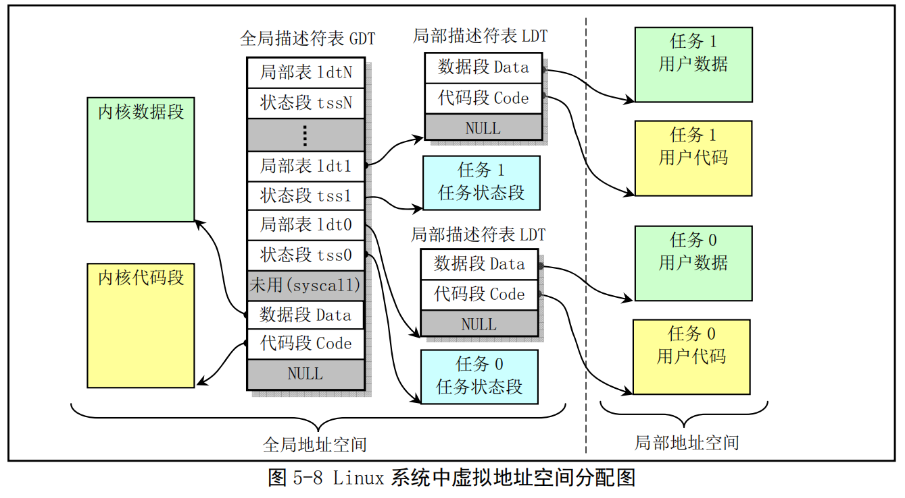
（注：GDT跟LDT二者有点类似二级页表的关系，GDT类似页表目录，同时也有页表的成分，因为可以用来索引内核任务段）
-
图中画出了具有两个任务时的情况。可以看出，每个任务的局部描述符表LDT本身也是由GDT中描述符定义的一个内存段，在该段中存放着对应任务的代码段和数据段描述符，因此LDT段很短，其段限长通常只要大于24字节即可。同样，每个任务的任务状态段TSS也是由GDT中描述符定义的一个内存段，其段限长也只要满足能够存放一个TSS数据结构就够了。
-
对于中断描述符表idt，它保存在内核代码段中。由于在Linux 0.11内核中，内核和各任务的代码段 和数据段都分别被映射到线性地址空间中相同基址处，且段限长也一样，因此内核的代码段和数据段是重叠的，各任务的代码段和数据段分别也是重叠的，参见图5-10 或图5-11所示。任务状态段TSS（Task State Segment）用于在任务切换时 CPU自动保存或恢复相关任务的当前执行上下文（CPU当前状态）。例如对于切换出的任务，CPU 就把其寄存器等信息保存在该任务的 TSS 段中，同时CPU使用新切换进任务的 TSS 段中的信息来设置各寄存器，以恢复该任务的执行环境，参见图4-37所示。在Linux 0.11 中,每个任务的TSS 段内容被保存在该任务的任务数据结构中。另外,Linux0.11内核中没有使用到GDT 表中第 4个描述符（图中 syscall描述符项）。从include/linux/sched.h文件中第150行上的原英文注释（如下所示）可以猜想到，Linus 当时设计内核时曾经想把系统调用的代码放在这个专门独立的段中。
/
Entry into gdt where to find first TSS. O-nul, 1-cs, 2-ds, 3-syscall
4-TSS0,5-LDTO,6-TSS1 etc ...
/
5.3.4 内存分页管理¶
-
使用分页机制最普遍的场合是当系统内存实际上被分成很多凌乱的块时,它可以建立一个大而连续的内存空间映像，好让程序不用操心和管理这些分散的内存块。分页机制增强了分段机制的性能。
-
内存分页管理机制的基本原理是将CPU整个线性内存区域划分成 4096字节为1页的内存页面。程 序申请使用内存时，系统就以内存页为单位进行分配。内存分页机制的实现方式与分段机制很相似，但并不如分段机制那么完善。因为分页机制是在分段机制之上实现的，所以其结果是对系统内存具有非常灵活的控制权，并且在分段机制的内存保护上更增加了分页保护机制。为了在80X86保护模式下使用分页机制，需要把控制寄存器CR0的最高比特位（位31）置位。
-
在使用这种内存分页管理方法时，每个执行中的进程（任务）可以使用比实际内存容量大得多的连 续地址空间。为了在使用分页机制的条件下把线性地址映射到容量相对很小的物理内存空间上，80386 使用了页目录表和页表。页目录表项与页表项格式基本相同，都占用4个字节，并且每个页目录表或页表必须只能包含1024个页表项。因此一个页目录表或一个页表分别共占用1页内存（10244B，即4KB）。页目录项和页表项的小区别在于页表项有个已写位D（Dirty），而页目录项则没有*。
-
线性地址到物理地址的变换过程见图5-9所示。图中控制寄存器CR3保存着是当前页目录表在物理内存中的基地址（因此 CR3也被称为页目录基地址寄存器PDBR）。32位的线性地址被分成三个部分，分别用来在页目录表和页表中定位对应的页目录项和页表项以及在对应的物理内存页面中指定页面内的偏移位置。因为1个页表可有1024项，因此一个页表最多可以映射1024＊4KB=4MB内存；又因为一个页目录表最多有1024项，对应1024个二级页表，因此一个页目录表最多可以映射1024＊4MB=4GB 容量的内存。即一个页目录表就可以映射整个线性地址空间范围。
-
由于Linux0.1x系统中内核和所有任务都共用同一个页目录表，使得任何时刻处理器线性地址空间到物理地址空间的映射函数都一样。因此为了让内核和所有任务都不互相重叠和干扰，它们都必须从虚拟地址空间映射到线性地址空间的不同位置，即占用不同的线性地址空间范围。
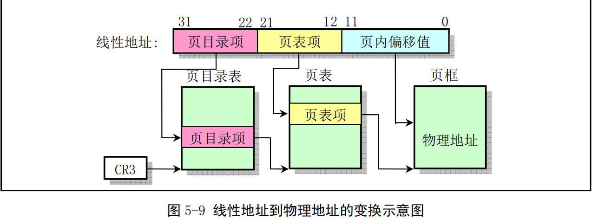
-
对于Intel 80386系统，其CPU可以提供多达4G的线性地址空间。一个任务的虚拟地址需要首先通 过其局部段描述符变换为CPU整个线性地址空间中的地址，然后再使用页目录表PDT（一级页表）和页表PT（二级页表）映射到实际物理地址页上。为了使用实际物理内存，每个进程的线性地址通过二级内存页表动态地映射到主内存区域的不同物理内存页上。由于Linux 0.11 中把每个进程最大可用虚拟内存空间定义为 64MB，因此每个进程的逻辑地址通过加上(任务号)*64MB，即可转换为线性空间中的地址。不过在注释中，在不至于搞混的情况下我们有时将进程中的此类地址简单地称为逻辑地址或线性地址。
-
对于Linux 0.11 系统，内核设置全局描述符表GDT 中的段描述符项数最大为 256，其中 2 项空闲、2 项系统使用，每个进程使用两项。因此，此时系统可以最多容纳(256-4)/2=126个任务，并且虚拟地址范围是（(256-4)/2）64MB 约等于 8G。但 0.11 内核中人工定义最大任务数NR_TASKS=64个，每个任务逻辑地址范围是64M，并且各个任务在线性地址空间中的起始位置是（任务号）64MB** 。
-
因此全部任务所使用的线性地址空间范围是64MB*64 =4G，见图5-10所示。图中示出了当系统具有4个任务时的情况。
-
内核代码段和数据段被映射到线性地址空间的开始16MB部分，并且代码和数据段都映射到同一个区域，完全互相重叠。而第1个任务（任务0）是由内核“人工”启动运行的，其代码和数据包含在内核代码和数据中，因此该任务所占用的线性地址空间范围比较特殊。任务0的代码段和数据段的长度是从线性地址0开始的640KB范围，其代码和数据段也完全重叠，并且与内核代码段和数据段有重叠的部分。实际上，Linux0.11中所有任务的指令空间I（Instruction）和数据空间D（Data）都合用一块内存，即一个进程的所有代码、数据和堆栈部分都处于同一内存段中，也即是I&D不分离的一种使用方式。
-
任务1的线性地址空间范围也只有从64MB开始的640KB长度。它们之间的详细对应关系见后面说明。任务2和任务3分别被映射线性地址128MB 和192MB 开始的地方，并且它们的逻辑地址范围均是 64MB。由于 4G地址空间范围正好是CPU的线性地址空间范围和可寻址的最大物理地址空间范围，而且在把任务0和任务1的逻辑地址范围看作64MB时，系统中同时可有任务的逻辑地址范围总和也是 4GB，因此在0.11内核中比较容易混淆三种地址概念。
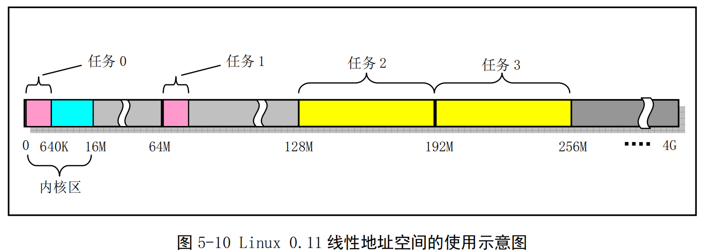
- 如果也按照线性空间中任务的排列顺序排列虚拟空间中的任务，那么我们可以有图5-11所示的系统同时可拥有所有任务在虚拟地址空间中的示意图，所占用虚拟空间范围也是4GB。其中没有考虑内核代码和数据在虚拟空间中所占用的范围。另外，在图中对于进程2和进程3还分别给出了各自逻辑空间中代码段和数据段（包括数据和堆栈内容）的位置示意图。
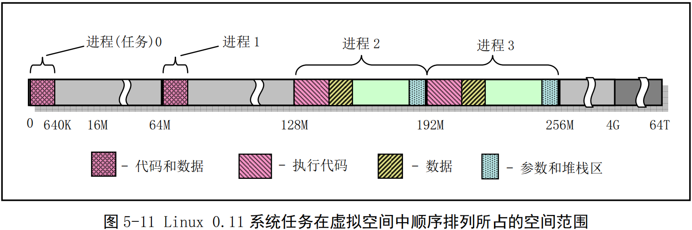
- 请还需注意，进程逻辑地址空间中代码段（Code Section）和数据段（Data Section）的概念与CPU分段机制中的代码段和数据段不是同一个概念。CPU分段机制中段的概念确定了在线性地址空间中一个段的用途以及被执行或访问的约束和限制，每个段可以设置在4GB线性地址空间中的任何地方，它们可以相互独立也可以完全重叠或部分重叠。而进程在其逻辑地址空间中的代码段和数据段则是指由编译器在编译程序和操作系统在加载程序时规定的在进程逻辑空间中顺序排列的代码区域、初始化和未初始化的数据区域以及堆栈区域。进程逻辑地址空间中代码段和数据段等结构形式见图所示。有关逻辑地址空间的说明请参见内存管理一章内容。
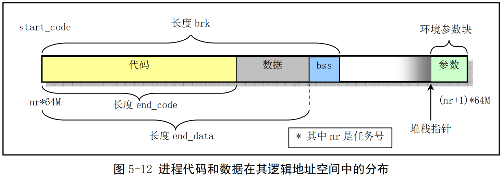
5.3.5 CPU多任务和保护方式¶
-
Intel 80X86CPU共分4个保护级，0级具有最高优先级，而 3 级优先级最低。Linux0.11操作系统使用了CPU的0和3两个保护级。内核代码本身会由系统中的所有任务共享。而每个任务则都有自己的代码和数据区，这两个区域保存于局部地址空间，因此系统中的其他任务是看不见的（不能访问的）。而内核代码和数据是由所有任务共享的,因此它保存在全局地址空间中。图5-13给出了这种结构的示意图。图中同心圆代表CPU的保护级别（保护层），这里仅使用了CPU的0级和3级。而径向射线则用来区分系统中的各个任务。每条径向射线指出了各任务的边界。除了每个任务虚拟地址空间的全局地址区域, 任务1中的地址与任务2中相同地址处是无关的。
-
当一个任务（进程）执行系统调用而陷入内核代码中执行时，我们就称进程处于内核运行态（或简称为内核态）。此时处理器处于特权级最高的（0级）内核代码中执行。当进程处于内核态时，执行的内核代码会使用当前进程的内核栈。每个进程都有自己的内核栈。当进程在执行用户自己的代码时，则称其处于用户运行态（用户态）。即此时处理器在特权级最低的（3级）用户代码中运行。当正在执行用户程序而突然被中断程序中断时，此时用户程序也可以象征性地称为处于进程的内核态。因为中断处理程序将使用当前进程的内核栈。这与处于内核态的进程的状态有些类似。进程的内核态和用户态将在后面有关进程运行状态一节中作更详细的说明。
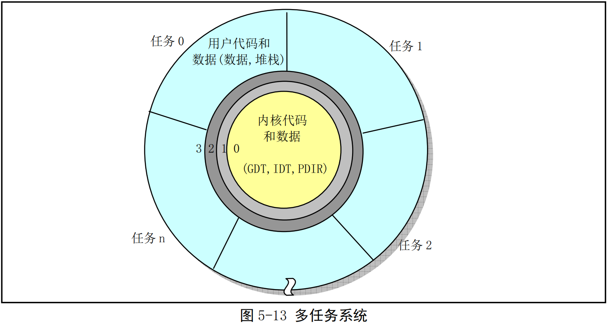
5.3.6 虚拟地址、线性地址和物理地址之间的关系¶
前面我们根据内存分段和分页机制详细说明了CPU的内存管理方式。现在我们以Linux0.11系统为 例，详细说明内核代码和数据以及各任务的代码和数据在虚拟地址空间、线性地址空间和物理地址空间 中的对应关系。由于任务0和任务1的生成或创建过程比较特殊，我们将对它们分别进行描述。
内核代码和数据的地址¶
对于Linux 0.11 内核代码和数据来说，在head.s程序的初始化操作中已经把内核代码段和数据段都 设置成为长度为16MB的段。在线性地址空间中这两个段的范围重叠，都是从线性地址0开始到地址 OxFFFFFF共16MB 地址范围。在该范围中含有内核所有的代码、内核段表（GDT、IDT、TSS）、页目录表和内核的二级页表、内核局部数据以及内核临时堆栈（将被用作第1个任务即任务0的用户堆栈）。其页目录表和二级页表已设置成把0--16MB的线性地址空间一一对应到物理地址上，占用了4个目录项，即4个二级页表。因此对于内核代码或数据的地址来说，我们可以直接把它们看作是物理内存中的地址。此时内核的虚拟地址空间、线性地址空间和物理地址空间三者之间的关系可用图5-14来表示。
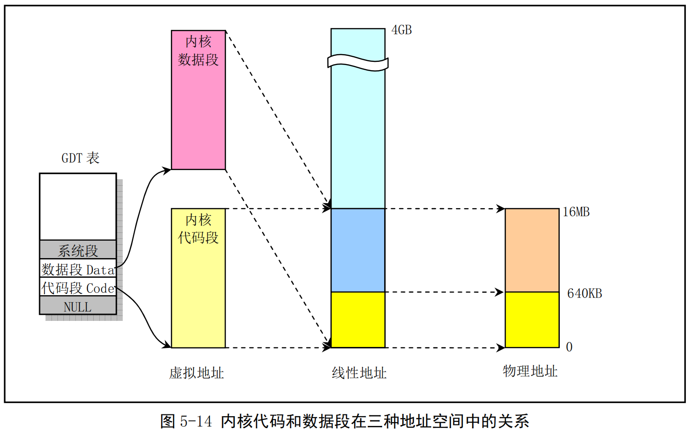
-
因此，默认情况下Linux 0.11 内核最多可管理 16MB 的物理内存，共有 4096（4K）个物理页面（页帧）,每个页面4KB。通过上述分析可以看出：
-
内核代码段和数据段区域在线性地址空间和物理地址空间中是一样的。这样设置可以大大简化内核的初始化操作。
-
GDT和IDT在内核数据段中，因此它们的线性地址也同样等于它们的物理地址。在实模式下的 setup.s 程序初始化操作中，我们曾经设置过临时的 GDT 和IDT，这是进入保护模式之前必须设置的。由于这两个表当时处于物理内存大约0x90200 处，而进入保护模式后内核系统模块处于物理内存0开始位置，并且0x90200 处的空间将被挪作他用（用于高速缓冲），因此在进入保护模式后，在运行的第1个程序head.s 中我们需要重新设置这两个表。即设置GDTR 和IDTR指向新的GDT和IDT，描述符也需要重新加载。但由于开启分页机制时这两个表的位置没有变动，因此无须再重新建立或移动表位置。
-
除任务0以外，所有其他任务所需要的物理内存页面与线性地址中的不同或部分不同，因此内核需要动态地在主内存区中为它们作映射操作，动态地建立页目录项和页表项。虽然任务1的代码和数据也在内核中，但由于他需要另行分配获得内存，因此也需要自己的映射表项。
-
虽然Linux 0.11默认可管理16MB 物理内存，但是系统中并不是一定要有这些物理内存。机器中只要有 4MB（甚至 2MB）物理内存就完全可以运行Linux0.11 系统了。若机器只有 4MB 物理内存，那么此时内核 4MB--16MB 地址范围就会映射到不存在的物理内存地址上。但这并不妨碍系统的运行。因为在初始化时内核内存管理程序会知道机器中所含物理内存量的确切大小，因而不会让CPU分页机制把线性地址页面映射到不存在的 4MB--16MB中去。内核中这样的默认设置主要是为了便于系统物理内存的扩展，实际并不会用到不存在的物理内存区域。如果系统有多于 16MB 的物理内存，由于在 init/main.c 程序中初始化时限制了对16MB 以上内存的使用，并且这里内核也仅映射了0--16MB 的内存范围，因此在 16MB之上的物理内存将不会用到。
-
通过在这里为内核增加一些页表，并且对init/main.c 程序稍作修改，我们可以对此限制进行扩展。例如在系统中有32MB 物理内存的情况下，我们就需要为内核代码和数据段建立 8个二级页表项来把 32MB 的线性地址范围映射到物理内存上。
任务0的地址对应关系¶
- 任务0是系统中一个人工启动的第一个任务。它的代码段和数据段长度被设置为640KB。该任务的代码和数据直接包含在内核代码和数据中，是从线性地址0开始的640KB内容，因此可以它直接使用内核代码已经设置好的页目录和页表进行分页地址变换。同样，它的代码和数据段在线性地址空间中也是重叠的。对应的任务状态段TSS0 也是手工预设置好的，并且位于任务0数据结构信息中，参见 sched.h 第 113 行开始的数据。TSS0 段位于内核 sched.c 程序的代码中，长度为104 字节，具体位置可参见图5-23 中“任务0结构信息”一项所示。三个地址空间中的映射对应关系见图5-15所示。
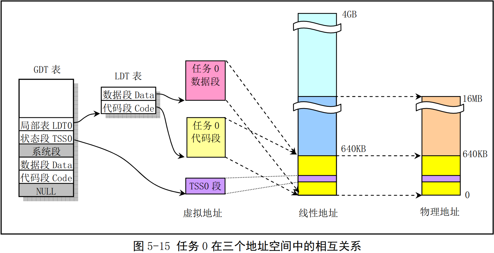
- 由于任务0直接被包含在内核代码中，因此不需要为其再另外分配内存页。它运行时所需要的内核态堆栈和用户态堆栈空间也都在内核代码区中，并且由于在内核初始化时（head.s）这些内核页面在页表项中的属性都已经被设置成了0b111，即对应页面用户可读写并且存在，因此用户堆栈 user_stack[]空间虽然在内核空间中，但任务0仍然能对其进行读写操作。
任务1的地址对应关系¶
- 与任务0类似，任务1也是一个特殊的任务。它的代码也在内核代码区域中。与任务0不同的是在线性地址空间中，系统在使用 fork()创建任务1（init进程）时为存放任务1的二级页表而在主内存区申请了一页内存来存放，并复制了父进程（任务0）的页目录和二级页表项。因此任务1有自己的页目录和页表表项，它把任务1占用的线性空间范围64MB--128MB（实际上是64MB--64MB+640KB）也同样映射到了物理地址0--640KB 处。此时任务1的长度也是 640KB，并且其代码段和数据段相重叠，只占用一个页目录项和一个二级页表。另外，系统还会为任务1在主内存区域中申请一页内存用来存放它的任务数据结构和用作任务1的内核堆栈空间。任务数据结构（也称进程控制块PCB）信息中包括任务1 的TSS 段结构信息。见图 5-16所示。
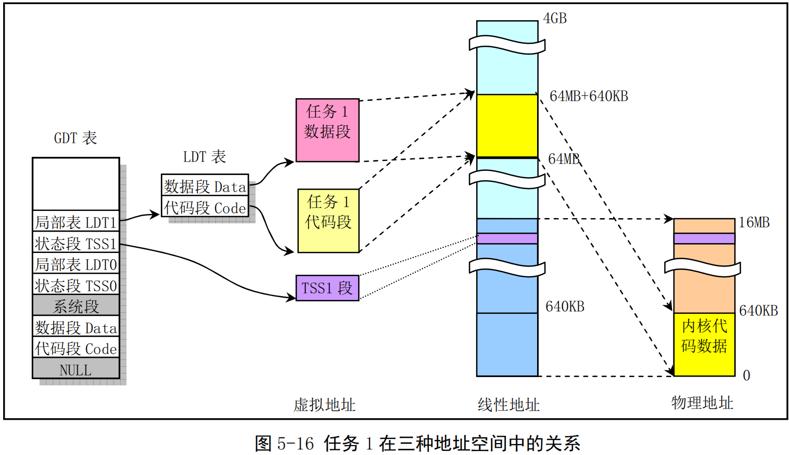
2024.12.28-
于昆明